孕媽居家設計大公開
如何打造最適合孕媽居住的育兒宅，是不少準父母在孕期的困擾之一吧！人生最脆弱的兩個階段是老人和幼兒階段，但對於女人來說，懷孕是第三種脆弱階段，必須時時小心謹慎，尤其是居家生活，當孕媽一個人承受兩個人的重量與責任時，身心狀態都不同，任何一點閃失都可能造成無法挽回的後果。
因此，ListenContent有感說特別邀請我們來分享「孕媽咪常看不見的居家危機有哪些」並提供最佳解決方針！
居家環境中隱藏了許多看不到的問題，包含有病菌、塵螨、過敏源、異味、油煙味、甲醛、TVOC，這些看似離我們很遠，其實就在你我的身邊，這邊就來告訴大家，如何去解決這些問題，也提供一些居家室內設計的小知識，創造GD健康綠裝修。
1.玄關處設置洗手槽或浴室空間首先，一回家在進門的地方可以設置有感應式水龍頭的洗手槽或浴室空間，將手部或是全身衣物更換身體清洗乾淨後，才能避免外面的病菌帶給自己的小小孩。
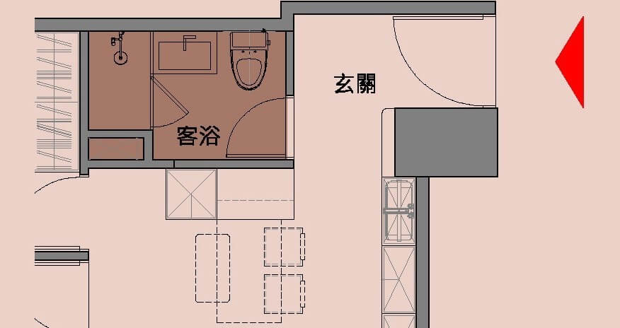 2.避免高低差在懷孕期間或是在小寶寶學習爬行與走路的期間，家中盡量避免高高低低的設計產生地坪落差與和室架高收納，這些設計較會增加絆倒風險，安全性不佳。
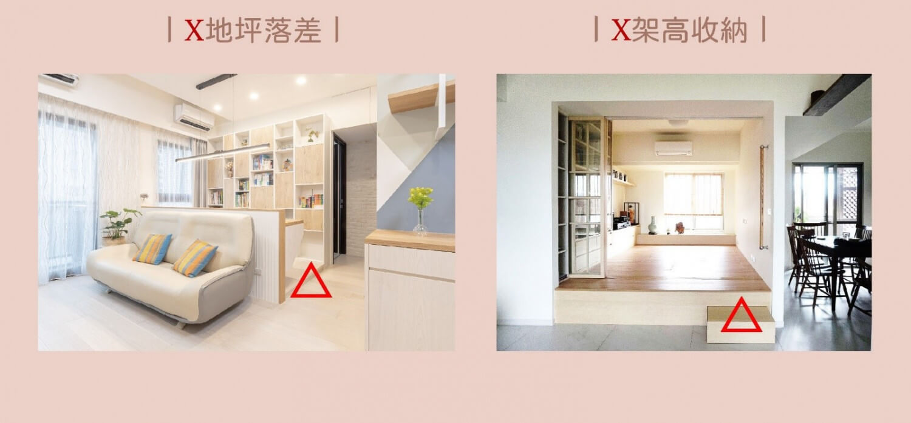如何避免呢?我們可以減少門檻的使用，例如玄關落塵區，高低差也盡量維持在3公分以下，正面可以倒斜角。進入浴室空間也可設計成無障礙形式，前面增加小斜坡來取代浴室門檻，增加安全性，喜歡橫拉門設計的家長們也都可以選用無地軌式的。
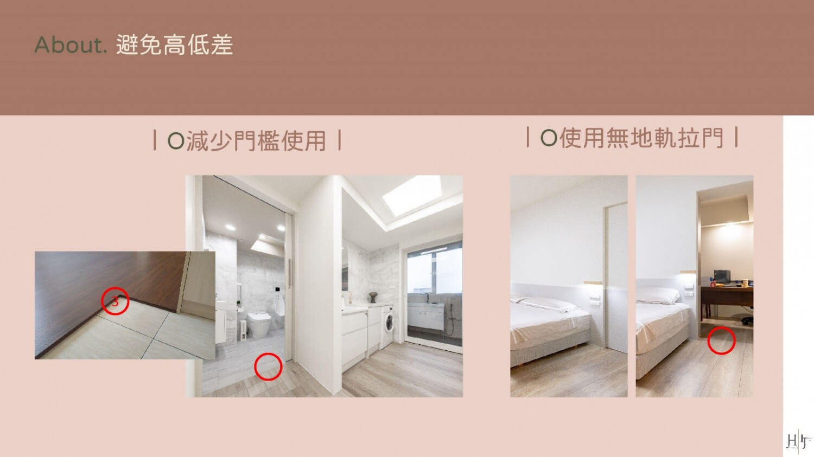 3.解決浴室問題常見到進去淋浴間，地上都有一條人造石的門檻，家中有孕婦、長輩或是小朋友，一不小心就會被絆倒，相對危險。淋浴門避免內開，如果裡面的人暈倒，因為打不開而錯過了黃金救援期。
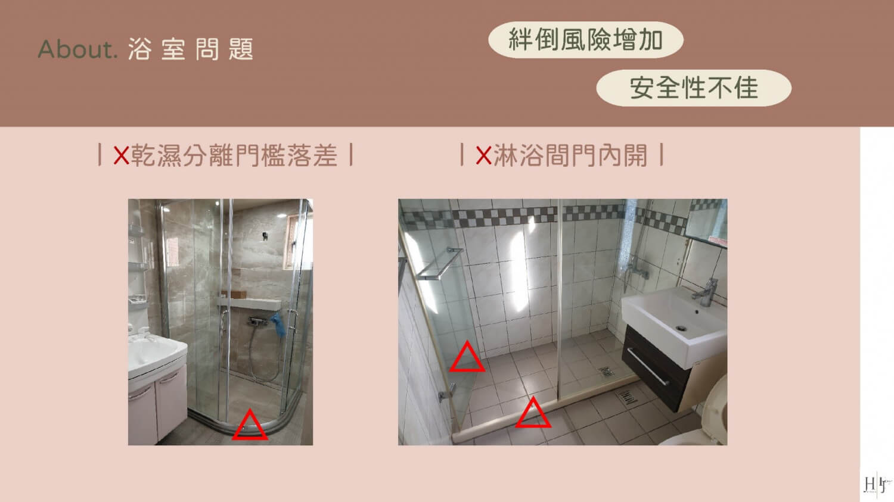所以我們在設計都會採用截水溝或是降板的方式來替代門檻，讓浴室地坪是平整而且加強排水，淋浴間的拉門一定要外開或是橫拉式，如果有家人暈倒在裡面，外開門才能將人救出來。
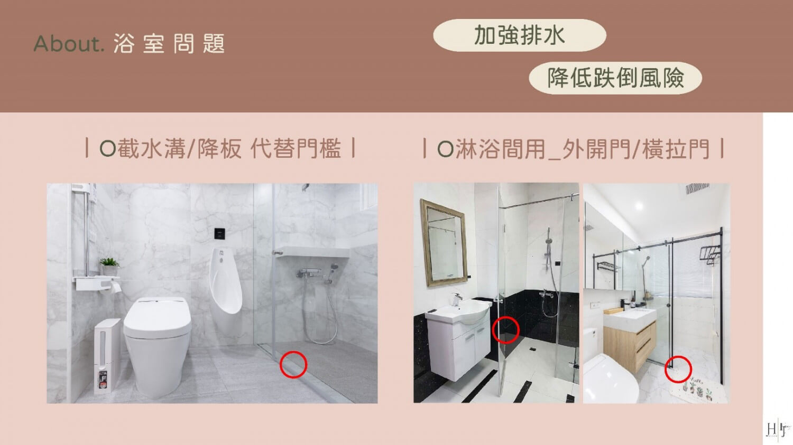 4.不做費力的收納針對懷孕中的媽媽行動沒有那麼靈活，收納的部分就要做到，好拿、好找、好放、好開關。要如何設計呢？收納櫃高度要適中，差不多在膝蓋以上，頭頂以下，這個區間是最方便拿取的位置，如果過高或是過低，都會造成需要墊腳拿或是蹲下彎腰拿，相對都會增加膝蓋負擔，現在都有一些便利的五金設備。舉例：廚房上櫃可以使用下拉式拉籃或是電動升降櫃，也都是蠻方便的；衣櫃也有相對應的產品，可以使用下拉式吊衣桿，來增加使用上的便利性，櫃體轉角處也可用導弧角設計，避免小朋友碰撞產生危險。
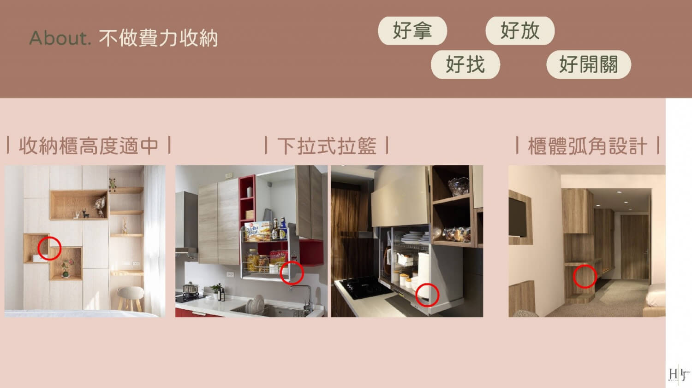 5.培養小朋友收納習慣設計時，就把小朋友的玩具收納考量進去，從小就培養物歸原位，自己的玩具自己收。第一點，配合小朋友的身高設計一排矮櫃，可以是開放式的或是有門片；第二點，可以依照玩具大小來使用收納盒分類，另外也可以使用透明盒，這樣玩具放哪一目了然，不會因為找不到車車或是芭比娃娃來找媽媽。
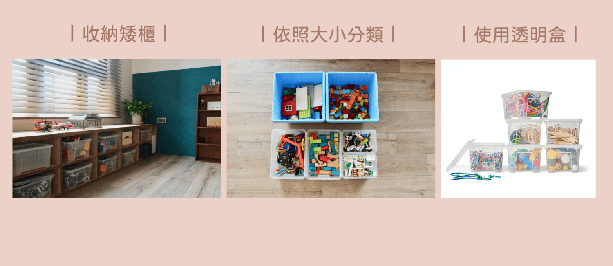 6.彈性使用空間我們在設計時，針對不同的使用時期，譬如學齡前或是上小學後，會有不同的使用情況，也就是需要彈性格局。舉例來說，家中有兩個小孩，小時候兩個房間可以是打通串連的，當長大後，需要各自的獨立空間，這時候只要用系統櫃將相連的通道阻隔起來，就變成獨立的兩個房間，使用上相對有彈性。
 7.選擇低甲醛建材
7.選擇低甲醛建材
市面上材料百百種，你會知道這個材料出處在哪嗎？品質好嗎？危險藏在哪？包含我們常使用的系統櫃、木作的夾板角材、油漆塗料、以及家具，這時候我們都會建議屋主盡量挑選低甲醛、低甲苯、無毒的材料，系統櫃的板材我們會建議使用F4顆星或是E0的板材，木板角材類的就要挑選F3等級以上的低甲醛材質，甚至是F1等級的木皮板，油漆塗料可以選擇有綠建材標章的，最清楚簡單。
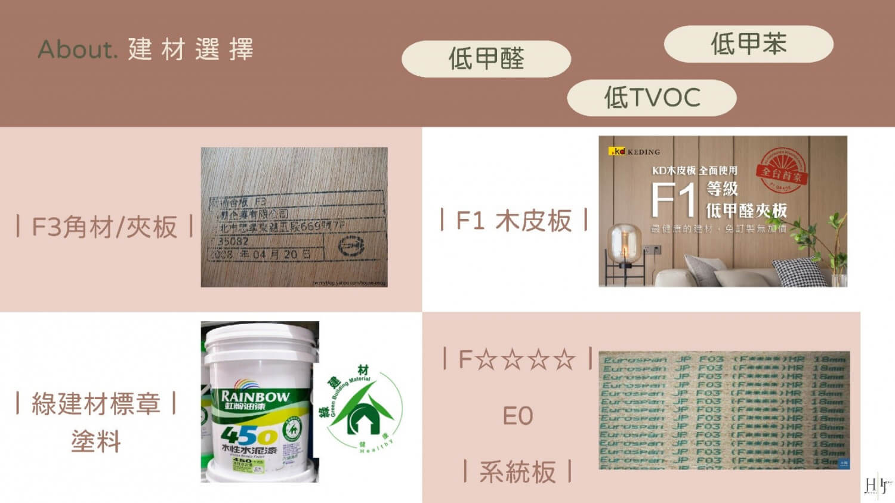 8.選擇功能性建材因為疫情的關係，有許多抗菌的材料出現，可以選擇抗菌板，這個蠻多品牌都有賣，它的原理是病菌不容易在表面上生存，而且好清潔，另外也推薦功能性的材料，包含調濕壁板或是硅藻土塗料，與我們常看到硅藻土地墊屬於相同成分，有調節濕氣、吸附異味、抑制黴菌繁殖...等等，對於媽媽寶寶家人們的居住空間，都有加分的效果。
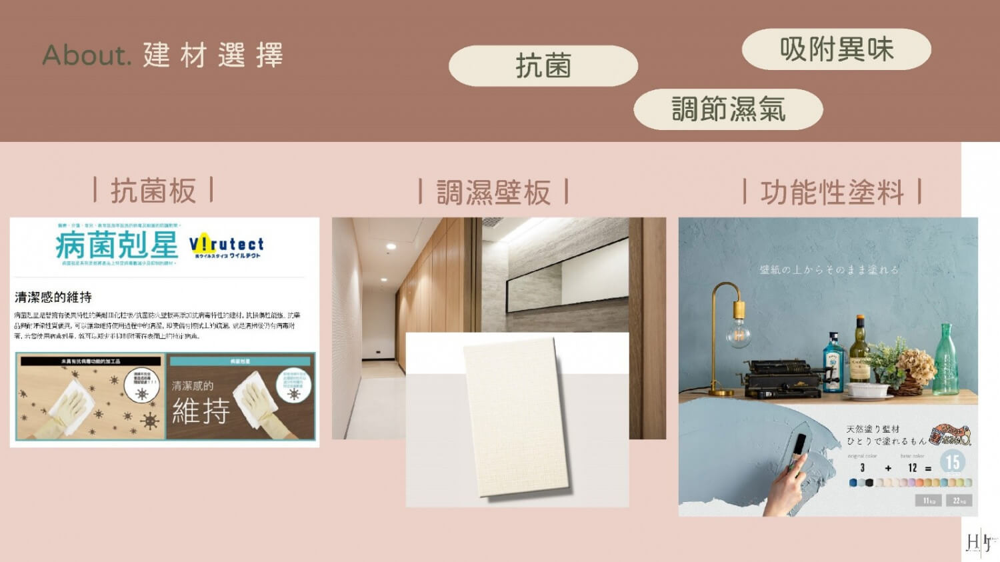 9.選擇機能性設備可以從水與空氣兩部分來講，水的部分可以使用臭氧水殺菌機，算是非常好用的設備，透過這個機器製造的臭氧水，可以用來清洗寶寶的奶瓶、奶嘴或是小朋友的餐具，甚至可以來擦拭桌面或是拿來拖地，都可以有效的殺菌。
空氣的部分，我們會建議會產生nanoe的設備，相信大家應該在廣告上常常聽到，日本品牌研發的東西，常見有冷氣、空氣清淨機、除濕機、洗衣機...等都會產生nanoe來抑制過敏原、病毒、細菌。不喜歡開窗，擔心外面粉塵與髒空氣跑進室內的家長們，可以考慮新風系統，在前期設計規劃時直接採納進去，對於過敏兒而言是相對創造更好的生活環境。
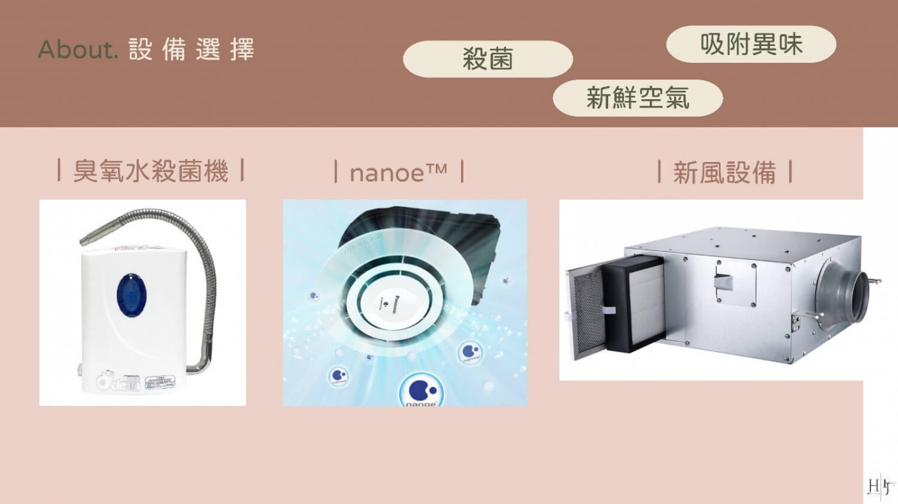以上提供9點給新手孕媽咪們好好參考，親子生活空間設計是門學問，必須使用對的方式、對的材料與設備，才能讓家人們開開心心的生活、小朋友快快樂樂地長大。
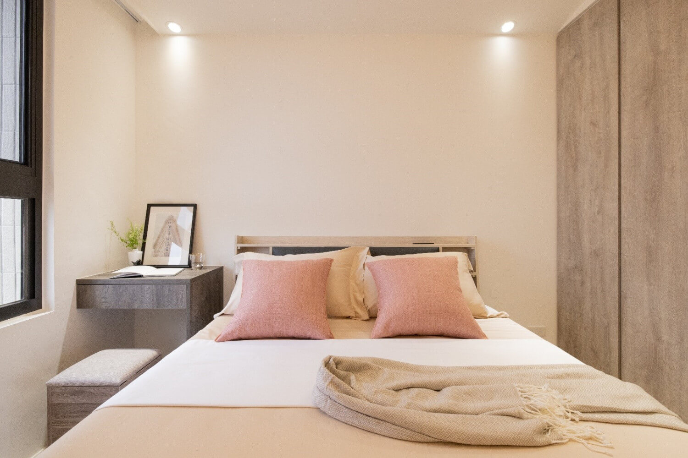